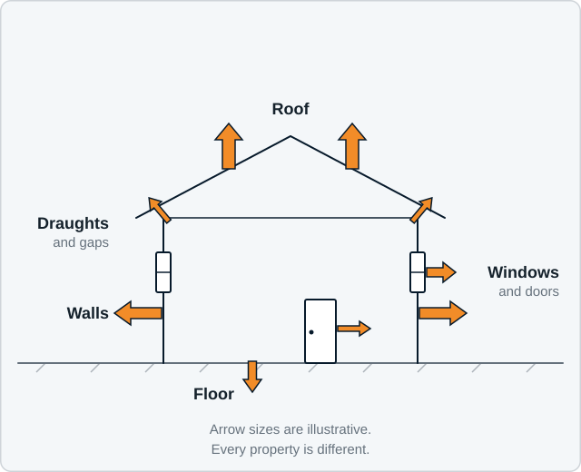
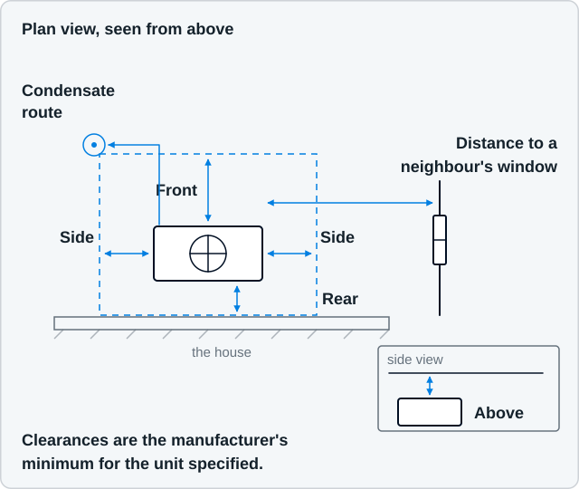

A survey that tells you what your home actually needs
This is an engineering visit, not a sales appointment. It is where the numbers behind the design come from.
Preparing for our April 2027 launch. Start with the Home Energy Assessment and we will tell you where your property stands.
What the survey is for
To work out whether your property can achieve comfortable rooms, sensible flow temperatures, good hot-water performance, adequate electrical capacity, acceptable noise and a practical installation — and to do it before anyone has committed to anything.
It answers the questions the online assessment cannot: how much heat each room actually loses, what each radiator can actually give out at a lower temperature, and where everything can physically go.
It is also the point at which guesswork stops being acceptable. Everything after the survey — the equipment, the emitter schedule, the programme, the price — depends on the measurements taken during it. A survey that skips a room, or estimates a radiator instead of measuring it, produces a design with a mistake built into every figure that follows.
Who a survey is for
- Homeowners who have completed the assessment and read our review
- People who want the numbers rather than a headline claim
- Renovations where the heating design needs to fit the building work
- Homes where a previous quotation felt like guesswork
A survey is not the first step. The Home Energy Assessment and our written review of the property come first, precisely so that nobody pays for a survey to be told something that could have been established beforehand. If you are still working out whether your property is a candidate at all, start with is my home suitable for a heat pump?
How Airwarm surveys
Digital measuring tools, voice notes and photographs are used as evidence aids, but they sit alongside a structured manual verification process rather than replacing it.
Where practical, the people who would install the system take part in or review the survey. That removes the gap between what was promised and what turns out to be possible.
Any calculation we show you will show its inputs and assumptions. You should never be asked to accept a number from a black box — including ours.
And every design is reviewed before the proposal is issued: heat loss, emitter capacity, flow temperature, hydraulic arrangement, hot water, controls, electrical requirements, siting, noise and scope. The review exists to catch the mistake that the person who did the work cannot see.
What you get afterwards
- Room-by-room heat loss
- Which emitters work as they are and which do not
- The proposed flow temperature and why
- Hot-water arrangement and cylinder position
- Outdoor-unit position, with the reasoning
- Electrical scope, and whether the network operator is involved
- Scope of work, in writing, with the assumptions listed
- What is excluded, and what could change the figure
Heat loss, room by room
Everything starts here. Heat loss is how much heat a room gives up to the outside on a cold day, and it decides the size of the heat pump, the size of every radiator and the temperature the system has to run at. It is calculated, not estimated from floor area.

Why room by room, and not whole-house
Because you do not live in an average. A whole-house figure can be right overall and still leave one north-facing bedroom that never gets warm. The room-by-room calculation is what tells you which emitters are already adequate and which are not — usually a handful, not all of them.
Why the construction matters
Solid stone, brick with a cavity, a filled cavity, an insulated internal wall and a back-to-earth cellar wall all behave differently. Age bands are a starting point, not an answer, and West Yorkshire has too much solid-wall stone for assumptions to be safe.
Why exposure and altitude matter
A design external temperature copied from a sheltered valley property will be undersized on the tops. Bradford district alone runs from the valley floor to settlements well above 300 metres, and wind exposure changes the answer too.
Why the flow temperature falls out of it
Once the heat loss and the emitter capacities are known, the lowest useful flow temperature can be chosen rather than guessed. That single number is the biggest single influence on what the system costs to run.
Everything that gets recorded
A survey that skips any of this is not really a survey.
The building
- Room dimensions, room by room
- Construction and insulation as built and as improved
- Windows, doors and obvious draught paths
- Floor construction, including cellars and back-to-earth walls
- Design temperatures for the local climate and exposure
The system
- Existing emitters, measured not estimated
- Pipe routes and pipe sizes
- Cylinder options and hot-water demand
- Existing controls and how the house is used
- Anything already installed that is worth keeping
The practical side
- Outdoor-unit positions and noise considerations
- Condensate route and frost protection
- Electrical supply, main fuse and consumer unit
- Access, parking and working space
- Anything that will need making good afterwards
And you
- What you want the house to feel like
- What you are and are not prepared to change
- Which rooms matter most, and when
- How your household actually uses hot water
- Anything that has annoyed you about the current heating
Photograph to come: a survey in progress in a real West Yorkshire home — measuring a room, recording radiator dimensions. Published when there is a real visit to photograph.
Where the outdoor unit can go
On a detached house with a garden this is usually a choice. On a terrace with a shared yard, or a back-to-back with one external elevation, it can be the question that decides the whole project. Which is why it is assessed early rather than assumed.

What makes a position work
- Enough free air in front of the fan, and clearance at the sides and rear
- No recirculation of its own cold discharge air back into the inlet
- A level, solid mounting, high enough to stay clear of standing water and drifted snow
- A condensate route that drains somewhere sensible and will not ice over a path
- A short, insulated pipe run to the plant indoors
- Safe access for servicing without a ladder over a boundary
- An acceptable noise level at the nearest neighbouring habitable room window
What complicates it locally
- Terraces with no rear access, where the only external wall fronts the street
- Shared yards and ginnels, where the position affects a neighbour as much as you
- Neighbouring windows a few metres away, which makes the noise assessment decisive
- Conservation areas and listed buildings, where consent is likely to be needed for anything visible
- Flood-risk positions on the valley floor, where mounting height is a design decision
- Steep sites, where a level position is not always obvious
None of these is automatically fatal. All of them are far better established at survey stage than after a deposit has been paid.
Honest limitations
A survey can conclude that the answer is no
Sometimes the honest result is that a heat pump is not the right next step for a property, or not yet. If that happens you will get the reasons and, where there is one, a practical route forward — which improvements would change the answer, and roughly in what order. That is a useful outcome, even though it is not the one anyone was hoping for.
What a survey cannot do
- See inside a wall. Where construction is uncertain it is recorded as an assumption, and the assumption is shown to you.
- Predict your bills. It can predict the flow temperature and the heat demand, which is as far as honesty goes.
- Grant permission. Where consent is needed, that is a matter for the local authority.
- Guarantee that nothing is found behind a floorboard. Where something is, you hear about it that day.
What happens if we disagree
Sometimes a survey concludes that a room needs a larger radiator and the owner would rather it did not. That is a legitimate position, and the honest response is not to quietly design around it.
What we will do is show you the effect: what flow temperature the existing emitter would require, what that does to efficiency, and which rooms would be affected on the coldest days. Then it is an informed decision rather than an argument.
Frequently asked questions
How long does a survey take?
Long enough to measure every room properly. It depends on the size and complexity of the property, and we will tell you what to expect when it is booked.
Do I need a survey before I get a price?
Yes, for a price we are willing to stand behind. Anything offered before the survey would be a guess dressed up as a figure.
Do I need a big garden?
No, but the outdoor unit needs enough free air around it, a route for condensate drainage, service access, and an acceptable noise level at neighbouring windows. Small yards and narrow side passages are often workable; the survey checks the specifics rather than applying a rule.
Where will the outdoor unit go?
Somewhere with adequate air flow, service access, a condensate drainage route and an acceptable noise level at the nearest neighbouring habitable room window. The survey assesses candidate positions and explains the reasoning for the one recommended, including any trade-off with appearance.
Do I need planning permission?
Usually not — most domestic installations proceed under permitted development, subject to conditions including noise. Flats, listed buildings and conservation areas are more restricted. Full answer on the heat pumps page.
Can I use the survey with another installer?
Ask us. We will give you a straight answer about what the survey covers and what it belongs to before you commit to it, rather than after.
Start with your home, not a product
The Home Energy Assessment takes a few minutes, asks for no photographs and gives you an honest first view of whether an air source heat pump is worth exploring for your property.
Unusual property? Listed building, off-grid, a renovation part way through? E-mail us and describe it if the assessment does not fit your situation.